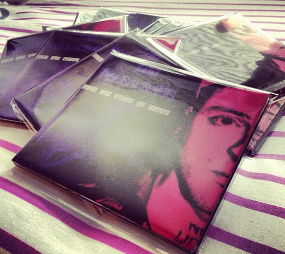

Don't miss out!
Atención alborotadoras y ciudadanos de padecida notoriedad, me complace informarles de que podréis conseguir vuestra copia física, solo tenéis que pedirmelo en la sección de contacto, ya sea medio el "cara a cara" como mandándola por Correos. Si teneis la dicha de vivir cerca del 33960 podeís conseguirla en uno de mis puntos de venta oficiales.
